Platform architecture
Multi-service applications, control planes, API gateways, backend integration and well-defined service boundaries.

From product strategy and software architecture to secure deployment and production operations.
I work at the intersection of software engineering, infrastructure architecture, data systems, and business strategy. My approach connects product objectives with secure deployment, operational resilience, and measurable outcomes.
My background includes leading development and marketing at an international investment holding and building vertically integrated business operations. Today, that systems-level perspective informs how I design and deliver digital platforms: end-to-end ownership, clear operational boundaries, disciplined change management, and repeatable verification.
Multi-service applications, control planes, API gateways, backend integration and well-defined service boundaries.
Linux, Nginx, systemd, Docker, SSH, TLS, deployment workflows and service health.
WireGuard, Xray, reverse proxies, tunnel-based administration, least privilege and credential isolation.
PostgreSQL, SQLite, Python, REST APIs, operational automation and analytics.
Encrypted backups, restore testing, versioned configuration, integrity checks and reproducible rollbacks.
Web interfaces, subscription workflows, customer portals, billing integration and business analytics.
Continuous feedback · Minimal exposure · Explicit access boundaries · Encrypted recovery · Tested rollbacks · Traceable changes.
| Layer | Technologies & capabilities |
|---|---|
| Application | Python, JavaScript, HTML, CSS, Django, Flask, REST APIs, SQLAlchemy |
| Frontend | React, Tailwind CSS, Fetch API, responsive UI components |
| Data | PostgreSQL, SQLite, JSON, XML, Power BI, DAX |
| Infrastructure | Ubuntu/Linux, Nginx, Docker Compose, systemd, SSH, WireGuard, TLS, Cloudflare |
| Delivery | Git, GitHub, GitLab CI/CD, Ansible, shell/Python automation |
| Assurance | Restic, age encryption, SHA-256 verification, backup/restore testing, logging and rollback |
| Developer tooling | VS Code, Codex, Homebrew, Postman, Ruff, Black, ESLint, Prettier |
Distributed service architecture, private control planes, encrypted delivery, network routing, resilient operations and verified recovery. Implementation details remain private.
Community platform for art, sound, and creative collaboration.
Digital presence for a finance-focused community.
International business and consulting presence.
Messaging and automated information delivery.


Statistics are rendered from repository SVG assets. Private activity visibility follows GitHub profile settings; language charts reflect repository composition, not proficiency.